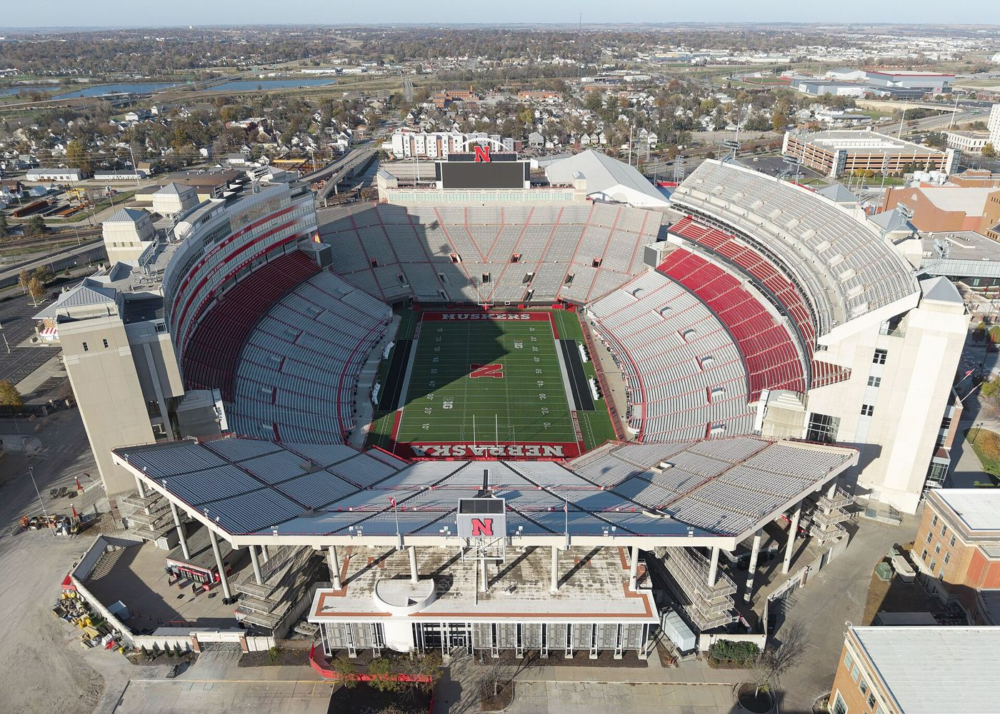

Anteprima · College football · Week 12
Ohio State a Lincoln con un quarterback ancora da scoprire
Ohio State @ Nebraska · 21/11/2026, ore 18:00 italiane · Memorial Stadium
Sabato 21 novembre, alle 18:00 italiane, il Memorial Stadium di Lincoln ospita una sfida di Big Ten che pesa più di quanto dicano i bilanci. Ohio State arriva 7-3, Nebraska 6-4: per entrambe è una partita che può cambiare il senso del finale di stagione.
I Buckeyes sono un'altra squadra rispetto a un mese fa. Avevano cominciato 6-1 con Julian Sayin a guidare l'attacco, poi il quarterback si è fatto male a un braccio contro Indiana e da allora hanno vinto una sola partita su tre. Al suo posto gioca il freshman Luke Fahey, che ha sofferto nelle prime due uscite da titolare e ha dato segnali migliori nell'ultima, il 28-19 su Northwestern, trovando con più continuità Jeremiah Smith. Il ricevitore resta il cuore dell'attacco, con quindici touchdown già in stagione, mentre Bo Jackson garantisce un gioco di corsa regolare.
I Cornhuskers arrivano da un mese difficile: quattro sconfitte di fila, tre delle quali per una sola segnatura contro Indiana, Oregon e Washington, prima del 31-0 a Rutgers. La loro forza è la difesa, tra le migliori dieci del paese secondo l'indice SP+, mentre l'attacco fatica a produrre. Molto passa dalle mani e dalle gambe di Anthony Colandrea, quarterback che corre volentieri; dall'altra parte, il pericolo per Fahey si chiama Jahsear Whittington, il migliore della squadra nei sack.
L'ultima volta, nel 2024, finì 21-17 per Ohio State. Stavolta molto dipende da quanto Fahey saprà reggere la pressione di una delle difese più solide della Big Ten: se le corse di Bo Jackson terranno i Buckeyes lontani dai terzi down lunghi, possono controllare la partita; altrimenti Lincoln rischia di diventare un posto scomodo.
Leggi su PureStats con meteo e numeri.jpg){kind=link}